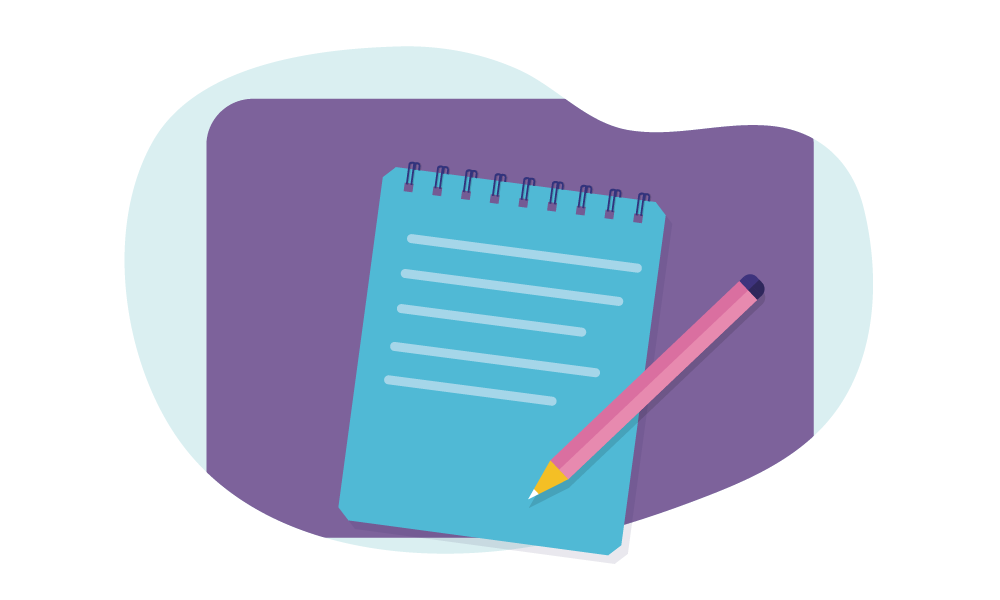

CP540: Project planning, management and methods
Note taking
L Lue
Department of Chemical and Process Engineering
University of Strathclyde
Overview
- Motivations
- Challenges
- Features of a good system
- Zettelkasten method
- Software
- Example workflow
- Example software: Obsidian
- Summary
Motivation

Recording information

Your mind is for having ideas, not holding them.
Getting Things Done
- Capture
- Process
- Organize
- Review
- Engage
What is information?

Types of information
- statements:
- objective
- subjective
- collective subjective (social constructs)
- examples:
- data
- concepts (frameworks for thinking)
- tasks, schedules, plans, etc.
- actions
The Collector's Fallacy
Data, Information, Knowledge, and Wisdom

Framework thinking
You can't really know anything if you just remember isolated facts and try to bang'em back. If the facts don't hang together on a latticework of theory, you don't have them in a useful form.
Charlie Munger
How do we interpret information?
|
|
|
|

What are the key elements?

thermodynamics of fluids
|
|
|


Water
Porter's Five Forces

PESTEL Analysis

Maslow's hierarchy of needs

Challenges
- large amount of information sources
- information comes in many different formats
- critical thinking is more important than being informed
- need to identify relevance of information
- need to search, retrieve, and organize information
- need to make connections between pieces of information
Features of a good system
- capture ideas & thoughts
- collate / curate the information
- finding/retrieving information
- access from anywhere
- connecting different sets of notes
- backup (robust against loss)
- variety of media
Zettelkasten method
- created by Niklas Luhmann
- Zettel = paper slip, Kasten = cabinet
- system to generate, organize, and use notes
- do not use categories: use tags and links
- external thinking system / second brain

General workflow

Taken from www.masterhowtolearn.com
Principles of constructing notes
- Atomic
- Autonomous
- Connected
structure of a "knowledge" Zettel / note
- identifier
- body
- references
Kasten system

Taken from zettelkasten.de
Issues with the Zettelkasten method?

Personal computing devices


Douglas Adams
I've come up with a set of rules that describe our reactions to technologies:
- Anything that is in the world when you're born is normal and ordinary and is just a natural part of the way the world works.
- Anything that's invented between when you're fifteen and thirty-five is new and exciting and revolutionary and you can probably get a career in it.
- Anything invented after you're thirty-five is against the natural order of things.

Software and future proofing
- open format
- software license
- closed source
- open source
- free source
- accessibility
- learning curve
Example software
Roam

Notion

OneNote

Logseq

Emacs: org-roam mode

Obsidian

Example work flow
- tools
- description of workflow
- shortcomings
- future modifications
Tools
- paper notebooks
- Emacs / org-mode
- Git
- Google calendar / Outlook
- Google Keep
Paper notebooks

Emacs / org-mode
Git

Future modifications and extensions
- management of tasks and "projects"
- consolidating notes
- working directly on phone
- LLMs
- NotebookLM
- Ollama
- IBM Granite
Example software: Obsidian
:revealbackgroundtrans: slide
Summary
- Motivations
- Challenges
- Features of a good system
- Zettelkasten method
- Software
- Example workflow
- Example software: Obsidian
Start developing your workflow!